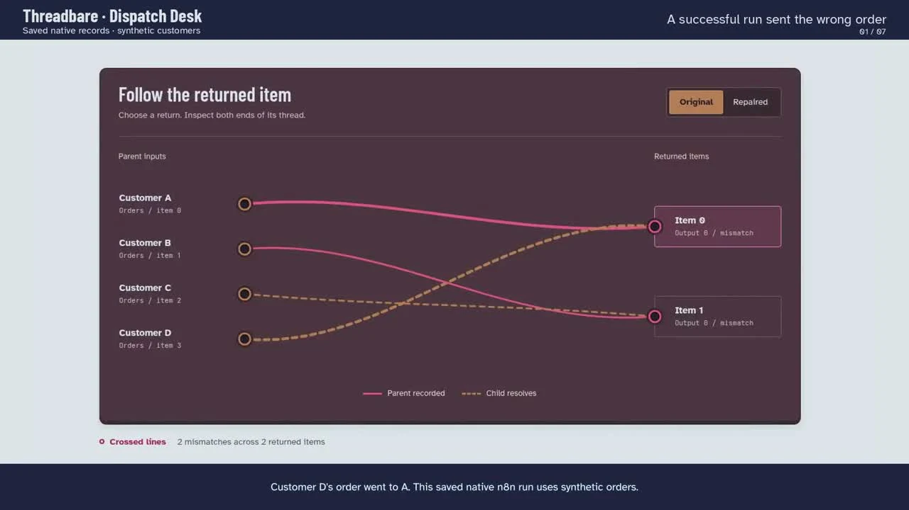

Threadbare
Follow a saved n8n child call to its source. Inspect raw evidence and download the report. Files stay in your browser.
n8n workflows, from caller to customer.
Trace the item. Check the actual request. Keep the proof with the fix.
We reproduced the fault, traced the return boundary, and repaired the route. Inspect the saved synthetic executions and real HTTP records.
Read the native repair & checksOne route, a focused fix and five agreed acceptance checks. Scope and payment terms agreed first.

Follow a saved n8n child call to its source. Inspect raw evidence and download the report. Files stay in your browser.
Test a workflow in the real n8n engine. Assert its HTTP requests and outputs before release.
Bind one job’s current local JSON in one Hermes profile, checking customer IDs before one selected registered tool runs. v0.1.2 is ready to install; its Marketplace PR awaits review. The 71-second demo uses fictional customers and recorded real Hermes calls.
Bounded CT-guided centering for papyrus fibers. Two fresh s1/s5 cubes show +5.58% and +0.94% same-chain continuity at matched manual coverage after native cleanup, with observed switches unchanged. Fixed-model postprocessing, complete controls and both radii are in the report.
Read the complete study / Run the native handoff.
CPU neural learning and causal priors for lossless compression. Reproduce the completed coded studies, including negative results, and inspect the prepared-stream restoration of the original 1 GB input.
Read the researchCPU numerical controls: ONNXRuntime quantization parity · BF16-to-FP8 precision and snapshot swaps with measured scratch and latency.
Have a CPU model/runtime mismatch? US$150 CPU parity diagnosis: two pinned configurations, measured differences and a rerunnable report. Send a minimal repro and deadline.